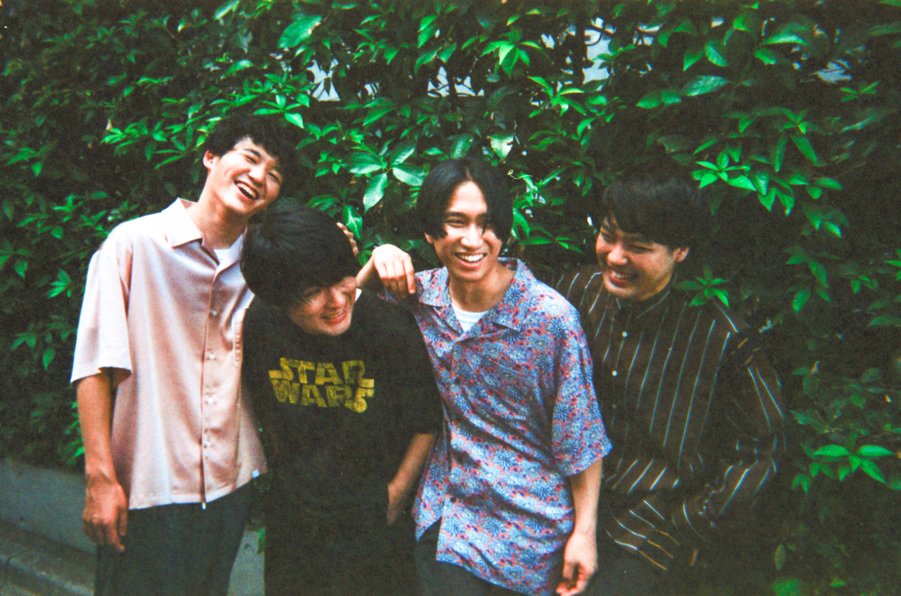

今熱い邦ロックベスト３
- THE ORAL CIGARETTES
- マカロニえんぴつ
- SHE'S
1.THE ORAL CIGARETTES

独特の狂気的で感情的な歌詞やメロディーが特徴の四人組バンド。ボーカルのやまたくの色気のある歌声とパフォーマンスにも注目。
2.マカロニえんぴつ

今最もメディアで引っ張りだこの四人組バンド。音大出身の四人の特徴は、どこか切なく、儚い恋愛ソング。
3.SHE'S

少し珍しい四人組のピアノロックバンド。ピアノを取り入れることによって、より深い表現を可能にしており、透き通るような井上さんの声とマッチして、聞いている人をうっとりさせてしまいます。